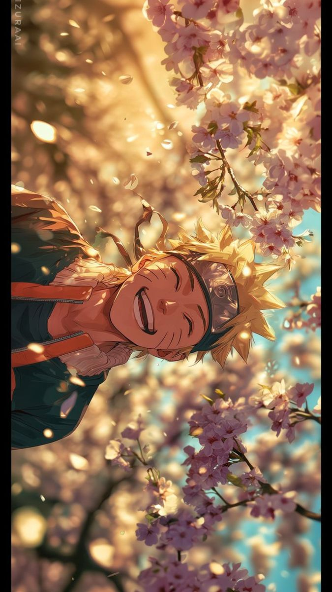
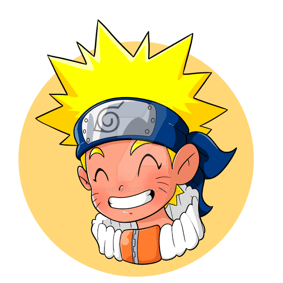

Naruto Uzumaki is the main character of the popular Japanese anime series Naruto. He is a young ninja who dreams of becoming the Hokage, the strongest and most respected ninja in his village. However, his childhood is not easy because people in his village treat him differently due to the Nine-Tailed Fox sealed inside him.
Despite facing loneliness, hatred, and rejection, Naruto never gives up on his dreams. He works extremely hard to become stronger and proves his abilities through determination and courage. Along his journey, he makes many friends, including Sakura Haruno, Shikamaru Nara, and his rival, Sasuke Uchiha. His teacher, Kakashi Hatake, also plays an important role in shaping him as a ninja.

One of the most beautiful things about Naruto is its message about friendship, forgiveness, hard work, and never losing hope. Naruto always tries to understand others, even those who hurt him. He believes that hatred can be overcome through love and understanding. His journey teaches us that our past does not define our future and that we should never judge someone without knowing their struggles.
One of the greatest lessons Naruto teaches us is that natural talent is not everything. Throughout the series, Naruto encounters several talented ninjas who seem much stronger and more skilled than him. His rival, Sasuke, is naturally gifted, while characters like Neji Hyuga believe that a person's destiny is already decided by birth. However, Naruto challenges this way of thinking. He believes that people can change their destiny through hard work, determination, and self-belief. One of the most memorable examples is his fight against Neji during the Chunin Exams. Neji believes that Naruto can never defeat him because he considers him a failure, but Naruto proves that one's background does not determine one's future. His determination also inspires Rock Lee, another character who struggles because he cannot use traditional ninjutsu or genjutsu. Naruto's journey reminds us that we do not need to be the most talented person in the room; we simply need the courage to keep learning, improving, and trying even when things seem impossible.
Eventually, Naruto achieves his lifelong dream of becoming the Seventh Hokage of the Hidden Leaf Village. His journey from a lonely, misunderstood child to a respected leader is truly inspiring. Naruto is not just an anime about ninjas and battles; it is a story about emotions, relationships, dreams, and the strength to keep moving forward. ❤️